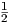
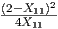
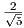
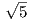
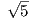

![[ ]
1 0 max 2 2y
minX ∈S2+ 0 1 ∙X y∈IR,S∈S+
[ ] [ 1 1 ] [ 1 0 ]
1 1 s.t. y + S = (SDD )
s.t. 1 0 ∙X = 2 (SDP ) 1 0 0 1
X ≽ 0 S ≽ 0](hw4sol0x.png)
What are the optimal solutions X and y, S? What are the optimal values?
Solution:
We can rewrite the primal problem as the nonlinear program

The equality constraint implies X12 = (2 - X11), Making this substitution gives the equivalent problem
At optimality, we must have X22 = , so we get the equivalent single variables problem
We have
and the function is strictly convex for 0 < X11. Thus the optimal primal solution is to take X11 = , with
with value zP * =  - 1.
The dual slack matrix is
so we require
The roots of the quadratic q(y) = y2 + y - 1 are
so the largest feasible value of y is
and so the optimal dual value is zD* =  - 1.
Note that the primal and dual optimal values agree.
As a check, you can calculate the product of the optimal X* and dual slack matrix S* and confirm that X*S* = 0 ∈ IR2×2.

Use the initial basic feasible solution with basic variables x12 = 1, x13 = 0, x41 = 1, with nonbasic variables x23 = 1,x24 = 0,x34 = 1. You should need two iterations.
Solution:
The initial solution is
1234(0,1,1,B)( - 2 , 1, 0 ,B)( - 1 , 1, 1 , UB)( - 2 , 1, 0 , LB )(0 , 1, 1 , UB )( - 10 , 10, 1 , B )green numbers: costsblack numbers: capacitiesmagenta numbers: flowsblue: Basic ornonbasic at Lower Bound ornonbasic at Upper Bound
Note that as presented in the question, the signs in the adjacency matrix are reversed from those in the notes. We have dual constraints
Complementary slackness requires:
Dual feasibility also requires wij,zij ≥ 0∀(i,j) ∈ E.
Calculate dual variables from complementary slackness on basic edges. Take y1 = 0, solve yj - yi = cij for basic edges.
1234(0,1,1,B)( - 2 , 1, 0 ,B)( - 1 , 1, 1 , UB)( - 2 , 1, 0 , LB )(0 , 1, 1 , UB )( - 10 , 10, 1 , B )green numbers: costsblack numbers: capacitiesmagenta numbers: flowsblue: Basic ornonbasic at Lower Bound ornonbasic at Upper Boundy1 = 0y2 = 0y4 = 10y3 = -2
We need yj - yi + zij - wij = cij for each edge (i,j) for dual feasibility. Calculate z,w values for nonbasic edges:
So arc (2,4) is a candidate to enter the basis. Flow is adjusted around the cycle 1 - 2 - 4 - 1.
1234(0,1,1 + ϵ,B)( - 2 , 1, 0 , B )( - 1 , 1, 1 , UB )( - 2 , 1, 0 + ϵ , LB)(0 , 1, 1 , UB )( - 10 , 10, 1 + ϵ , B )green numbers: costsblack numbers: capacitiesmagenta numbers: flowsblue: Basic ornonbasic at Lower Bound ornonbasic at Upper Bound
We have to take ϵ = 0 and arc (1,2) leaves the basis. The updated solution is:
1234(0,1,1,UB)( - 2 , 1, 0 , B)( - 1 , 1, 1 , UB)( - 2 , 1, 0 , B )(0 , 1, 1 , UB )( - 10 , 10, 1 , B )green numbers: costsblack numbers: capacitiesmagenta numbers: flowsblue: Basic ornonbasic at Lower Bound ornonbasic at Upper Bound
Calculate dual variables from complementary slackness on basic edges. Take y1 = 0, solve yj - yi = cij for basic edges.
1234(0,1,1,UB)( - 2 , 1, 0 , B)( - 1 , 1, 1 , UB)( - 2 , 1, 0 , B )(0 , 1, 1 , UB )( - 10 , 10, 1 , B )green numbers: costsblack numbers: capacitiesmagenta numbers: flowsblue: Basic ornonbasic at Lower Bound ornonbasic at Upper Boundy1 = 0y2 = 12y4 = 10y3 = -2
We need yj - yi + zij - wij = cij for each edge (i,j) for dual feasibility. Calculate z,w values for nonbasic edges:

So arc (2,3) is a candidate to enter the basis. Flow is adjusted around the cycle 1 - 3 - 2 - 4 - 1.
1234(0,1,1,UB)( - 2 , 1, 0 +ϵ,B)( - 1 , 1, 1 - ϵ , UB)( - 2 , 1, 0 + ϵ , B )(0 , 1, 1 , UB )( - 10 , 10, 1 + ϵ , B )green numbers: costsblack numbers: capacitiesmagenta numbers: flowsblue: Basic ornonbasic at Lower Bound ornonbasic at Upper Bound
We have to take ϵ = 1 and arc (2,3) moves from being nonbasic at its upper bound to being nonbasic at its lower bound. The updated solution is:
1234(0,1,1,UB)( - 2 , 1, 1 , B)( - 1 , 1, 0 , LB)( - 2 , 1, 1 , B )(0 , 1, 1 , UB )( - 10 , 10, 2 , B )green numbers: costsblack numbers: capacitiesmagenta numbers: flowsblue: Basic ornonbasic at Lower Bound ornonbasic at Upper Bound
Calculate dual variables from complementary slackness on basic edges. Take y1 = 0, solve yj - yi = cij for basic edges.
1234(0,1,1,UB)( - 2 , 1, 1 , B)( - 1 , 1, 0 , LB)( - 2 , 1, 1 , B )(0 , 1, 1 , UB )( - 10 , 10, 2 , B )green numbers: costsblack numbers: capacitiesmagenta numbers: flowsblue: Basic ornonbasic at Lower Bound ornonbasic at Upper Boundy1 = 0y2 = 12y4 = 10y3 = -2
We need yj - yi + zij - wij = cij for each edge (i,j) for dual feasibility. Calculate z,w values for nonbasic edges:
Since wij,zij ≥ 0∀(i,j) ∈ E, we are optimal. Optimal value is cT x = -24 = -uT w.
Solution:
It is given that the cost of pushing xij units of flow along arc (i,j) is given by a piecewise linear function of the form
where the function consists of kij + 1 line segments and where cij1 < cij2 < … < cijkij+1. We can represent the problem as a problem with linear costs by introducing an extra 2kij edges and kij vertices for each original edge. Edge (i,j) is replaced by the complex below:
ijvij1vij 2vij kij(aij 1 ,cij1)(aij 2 - aij1,cij2)(aij 3 - aij 2 , cij 3 )(uij - aij kij , cij kij+1)(uij , 0)(uij , 0)(uij , 0)blue numbers: capacitiesblack numbers: costs
Solution:
Assume xv0v1 is fractional. Since all the capacities and demands are integral, there must be another edge (v1,v2) with xv1v2 fractional. Since bv2 is integral, can find another (v2,v3) with xv2v3 fractional. By continuing this process, a vertex will eventually be repeated, giving a cycle, with every edge on the cycle having fractional flow.
Flow can be increased or decreased around this cycle, while still maintaining feasibility. Since the current flow is optimal, the cost of the cycle must be zero. Decreasing the flow around the cycle will drive at least one xe value to an integral value, while only modifying fractional values.
If the resulting flow is still fractional, we can repeat this process, eventually obtaining an integral optimal flow.

The costs are identical for each commodity. 25 units of commodity A need to be moved from node 1 to node 3. 20 units of commodity B need to be moved from node 5 to node 3. 20 units of commodity C need to be moved from node 4 to node 1. The current set of paths consists of 1 → 2 → 3 and 1 → 5 → 4 → 3 for commodity A, 5 → 2 → 3 for commodity B, and 4 → 5 → 1 for commodity C. Use the path based approach described in class to show that this is not an optimal set of paths. What is the optimal solution?
Solution:
12345(8,25)(11 , 40)(7 , 35)(10 , 50)(6 , 40)(6 , 25)(8 , 50)blue numbers: costsblack numbers: capacities
Need to set up linear programming formulation, so need to calculate costs of the paths:
The LP is

Optimal solution is
Dual problem is

From complementary slackness, dual solution is
with
The subproblems require solving shortest path problems for each commodity, with costs c + w:
1234581117106 6 8 red numbers:modified costs
Shortest paths with the modified costs:
- Commodity A: 1 - 2 - 4 - 3, cost 24 < σA = 25.
- Commodity B: 5 - 4 - 3, cost 14 < σB = 23.
- Commodity B: 4 - 2 - 1, cost 18 < σC = 19.
All three paths have negative reduced cost. Add the one with the most negative reduced cost, namely path 5 - 4 - 3 for Commodity B. The cost of this path is c45 + c34 = 14. The updated primal LP is

Optimal solution is

Updated dual problem is

From complementary slackness, one dual solution is
with
(There are multiple dual optimal solutions, with 25 ≥ σA = 16 + w12, w12 ≥ 0.)
The subproblems require solving shortest path problems for each commodity, with costs c + w:
123459118 106 6 8 red numbers:modified costs
Shortest paths with the modified costs:
- Commodity A: 1 - 2 - 3, cost 17 = σA.
- Commodity B: 5 - 4 - 3, cost 14 = σB.
- Commodity B: 4 - 2 - 1, cost 19 = σC.
Thus, no path has negative reduced cost, so we are dual feasible in the full problem, so we are optimal.